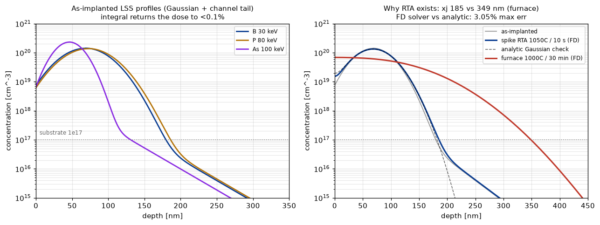
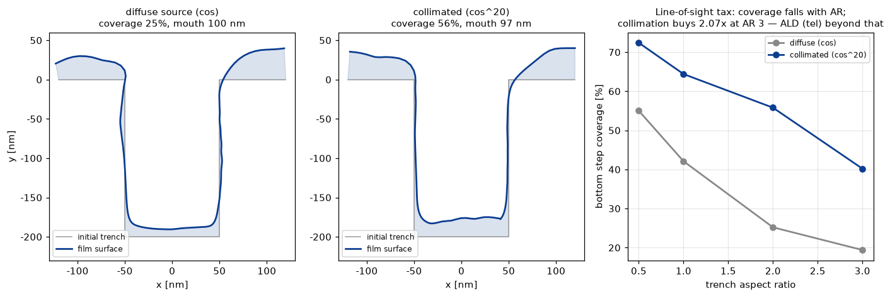

前工程で空白だった2工程を埋める：イオン注入＋活性化アニール（LSS理論→ガウス分布→FD拡散ソルバを解析解と閉ループ）と、PVDスパッタのトレンチ被覆（可視積分→オーバーハング→ピンチオフ）。どちらも装置世界最大手の看板工程で、「なぜRTAが存在するのか」「なぜ高ARはALDに切り替えるのか」という装置選定の論理を数値で示す。
LSS理論の投影飛程Rp・ストラグルΔRp（B/P/Asのべき乗フィット、重いイオンほど浅いをテストで検証）＋チャネリングテールで注入プロファイルを構成し、積分がドーズを<1%で回収（残りは表面切断の物理的ロス）。アニールは自作FD拡散ソルバで解き、ガウスがガウスのまま σ²+=2Dt になる解析解と閉ループ（誤差<5%、チャネル項除く）。Arrhenius D(T)で熱予算を定量化すると：スパイクRTA（1050°C/10s）は接合185nm、炉（1000°C/30分）は349nm——ほぼ2倍深い。浅接合が要る世代でRTAが発明された理由が、1本のグラフになる。シート抵抗はキャリア濃度依存移動度で積分。

PVDは見通し線の堆積：トレンチ開口は全天を見るが、底は狭まる円錐しか見えない——上部コーナーが最速で成長し、オーバーハング→ピンチオフ→ボイドへ。表面ポリラインを法線成長させ、毎ステップ可視積分を再計算（cos^n光源、遮蔽判定はレイ×全線分のベクトル化交差）。閉ループ：平面のフラックスは厳密に1.00。結果：拡散源の底面カバレッジはAR0.5→3で55→19%と単調劣化、コリメーション（cos²⁰）で2.1倍改善——それでも足りない高ARはALD（AR^1.93ドーズ則）に切り替える、という装置選定の分岐点まで一直線。

関連（実装済み）：熱酸化・バッチ炉・エッチ/ALD・CZ結晶成長。出所：amat/{implant_anneal, pvd_sputter}.py。